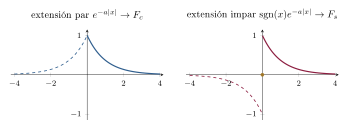
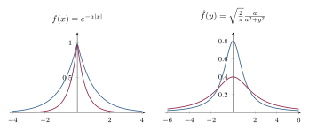
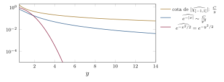
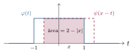

La función Φ que se pone en correspondencia con la función f por la fórmula Φ(y)=V.P.2π1∫−∞+∞f(t)e−iytdt se llama transformación de Fourier de la función f y se designa F[f]; también f^.
La transformación de Fourier está definida, en particular, para todas las funciones absolutamente integrables (y entonces la integral converge absolutamente, sin necesidad del valor principal). Empleando la designación f^, f(x)=V.P.2π1∫−∞+∞f^(y)eixydy. Esta fórmula permite restablecer la función f si se sabe su transformación de Fourier: es la fórmula de inversión.
La función Ψ que se pone en correspondencia con f por Ψ(y)=V.P.2π1∫−∞+∞f(t)eiytdt se llama transformación inversa de Fourier de la función f y se denota F−1[f].
La transformación de Fourier y la transformación inversa de Fourier están definidas en un conjunto de funciones para las cuales Φ(y), Ψ(y) existen en el sentido del valor principal. Llamemos X a ese conjunto; además, L1(R)⊂X. Note que F−1[f](y)=F[f](−y).
Si f∈L1(R)∩C(R) y tiene en cada punto derivadas unilaterales finitas, entonces F−1[F[f]]=F[F−1[f]]=f.
Demostraciónmostrar
Claramente F−1[F[f]]=f, pues, por la forma compleja de la integral de Fourier, f(x)=V.P.2π1∫−∞+∞2π1∫−∞+∞f(t)eiy(x−t)dtdy=V.P.2π1∫−∞+∞[2π1∫−∞+∞f(t)e−iytdt]eixydy, es decir, f(x)=F−1[F[f]](x). Ahora probemos F[F−1[f]]=f. Como cos es par, f(x)=2π1∫−∞+∞dy∫−∞+∞f(t)cosy(t−x)dt, y por ser el seno impar, V.P.∫−∞+∞dy∫−∞+∞f(t)seny(t−x)dt=0; por tanto f(x)=2π1∫−∞+∞dy∫−∞+∞f(t)eiy(t−x)dto bienf(x)=2π1∫−∞+∞[2π1∫−∞+∞f(t)eiytdt]e−ixydy, donde la integral exterior se toma en el sentido del valor principal; es decir, f=F[F−1[f]].
Supongamos que para f1 y f2 existe la transformación de Fourier (la transformación inversa de Fourier, respectivamente). Entonces ∀λ1,λ2∈R, para la función λ1f1+λ2f2 también existe la transformada de Fourier (la transformada inversa, respectivamente), y F[λ1f1+λ2f2]=λ1F[f1]+λ2F[f2],F−1[λ1f1+λ2f2]=λ1F−1[f1]+λ2F−1[f2].
Demostraciónmostrar
Para cada η>0, ∫−ηη(λ1f1+λ2f2)e−iytdt=λ1∫−ηηf1e−iytdt+λ2∫−ηηf2e−iytdt, y el límite de una combinación lineal de funciones con límite es la combinación lineal de los límites. Igual para F−1. (Vale también para λ1,λ2∈C.)
La transformación de Fourier F, al igual que la transformada inversa de Fourier F−1, son aplicaciones biunívocas (inyectivas) del conjunto de funciones continuas absolutamente integrables en R que tienen en cada punto derivadas unilaterales, en el conjunto de funciones para las cuales las integrales 2π1∫−∞+∞f(t)e−iytdt,2π1∫−∞+∞f(t)eiytdt existen en el sentido del valor principal.
Demostraciónmostrar
Es suficiente demostrar sólo la biunivocidad de F y F−1; las demás propiedades ya se han probado para F. Sea F[f1]=F[f2]. Entonces F−1[F[f1]]=F−1[F[f2]] y, por el Lema 12.4, f1=f2. Lo mismo para F−1, usando F[F−1[f]]=f.
12.1 Transformadas seno y coseno
Si f(x)=π1∫0+∞dz∫−∞+∞f(u)cosz(u−x)du=π1∫0+∞coszxdz∫−∞+∞f(u)coszudu+π1∫0+∞senzxdz∫−∞+∞f(u)senzudu (usando cosz(u−x)=coszucoszx+senzusenzx), entonces: si f es par, el segundo término es igual a cero (pues f(u)senzu es impar en u) y f(x)=π2∫0+∞coszxdz∫0+∞f(u)coszudu; para f impar, f(x)=π2∫0+∞senzxdz∫0+∞f(u)senzudu. Una función definida en (0,+∞) permite extensiones par e impar (salvo en el punto 0, tal vez).
Transformada de Fourier para función par (transformada coseno):Fc(z)=π2∫0+∞f(u)coszudu,f(x)=π2∫0+∞Fc(z)cosxzdz.Transformada de Fourier para función impar (transformada seno):Fs(z)=π2∫0+∞f(u)senzudu,f(x)=π2∫0+∞Fs(z)senxzdz.

Una función en (0,∞) (trazo grueso) se extiende de forma par o impar; la integral de Fourier de la extensión par es la fórmula del coseno y la de la impar, la del seno. En x=0 la extensión impar salta y la fórmula del seno da 0, el promedio.
Calcular ∫0+∞a2+z2coszxdzy∫0+∞a2+z2zsenzxdz; para esto calculemos Fc y Fs para f(x)=e−ax (a>0, x≥0).
Soluciónintenta primero
Fc(x)=π2∫0+∞e−azcoszxdz; integrando por partes dos veces: si C=∫0∞e−azcoszxdz y S=∫0∞e−azsenzxdz, entonces C=a1−axS y S=axC, de donde C=a2+x2a, S=a2+x2x. Tenemos Fc(x)=π2a2+x2a,Fs(x)=π2∫0+∞e−azsenzxdz=π2a2+x2x. Calculando la transformada inversa (la extensión par de e−a∣x∣ es continua y derivable a trozos, y la impar lo es salvo en 0, donde salta): π2a∫0+∞a2+z2coszxdz=e−ax(x≥0),π2∫0+∞a2+z2zsenzxdz=e−ax(x>0). Entonces ∫0+∞a2+z2cosxzdz=2aπe−axy∫0+∞a2+z2zsenxzdz=2πe−ax(x>0). En x=0 la segunda integral vale 0, que es el promedio 2e0+(−e0) de la extensión impar.

a=1 (azul) y a=2 (vino): cuanto más concentrada está f, más extendida está su transformada. El pico en x=0 (punto sin derivada) produce un decaimiento lento ∼y21.
12.2 Transformada de las derivadas y derivada de la transformada
Si f∈L1(R), f^(y) está acotada en R, con la particularidad ∣f^(y)∣≤2π1∫−∞+∞∣f(x)∣dx. Además f^ es (uniformemente) continua y f^(y)→0 cuando ∣y∣→∞.
Demostraciónmostrar
∣f(x)e−ixy∣=∣f(x)∣. La continuidad: ∣f^(y+h)−f^(y)∣≤2π1∫∣f(x)∣∣e−ixh−1∣dx; dado ε>0 se elige A con ∫∣x∣>A∣f∣<ε, y para ∣h∣<Aε, ∣e−ixh−1∣≤∣xh∣<ε si ∣x∣≤A; así la diferencia es ≤2π1(2ε+ε∫∣f∣), uniformemente en y. El límite en ∞ es el Lema de Riemann–Lebesgue aplicado a fcos y fsen.
Sea f∈L1(R) tal que tiene n derivadas absolutamente integrables y continuas en R. Entonces F[f(k)]=(iy)kF[f],k=1,…,n, y existe M>0 tal que ∣F[f](y)∣≤∣y∣nM,y=0.
Demostraciónmostrar
Sea f∈L1(R), f′∈L1(R)∩C(R). Entonces f(x)=f(0)+∫0xf′(t)dt. Como ∫−∞+∞∣f′(t)∣dt converge, entonces converge ∫−∞+∞f′(t)dt; por tanto existen los límites limx→±∞∫0xf′(t)dt y, por consiguiente, limx→±∞f(x). Además, como ∫−∞+∞∣f(t)∣dt<∞, tenemos que limx→±∞f(x)=0 (si el límite fuese L=0, sería ∣f∣≥2∣L∣ para ∣x∣ grande y ∫∣f∣ divergiría). Integrando por partes en [−A,B] y haciendo A,B→∞, F[f′](y)=2π1∫−∞+∞f′(x)e−ixydx=2π1f(x)e−ixy−∞+∞+2πiy∫−∞+∞f(x)e−ixydx=iyF[f](y), pues ∣f(x)e−ixy∣=∣f(x)∣→0. Por inducción se prueba lo demás (aplicando lo anterior a f(k−1), que está en L1 con derivada continua en L1).
Por el Lema 12.10, la función F[f(n)] está acotada; por tanto M=sup−∞<y<+∞F[f(n)](y) es finita y M≥F[f(n)](y)=∣y∣n∣F[f](y)∣,luego∣y∣nM≥∣F[f](y)∣.
Si f(x) es continua y las funciones f(x),xf(x),…,xnf(x) son absolutamente integrables en R, entonces la transformada de Fourier de f será una función n veces derivable en R, y ikF(k)[f]=F[xkf],k=0,1,…,n, donde F(k)[f] denota la derivada k-ésima de f^ respecto de y.
Demostraciónmostrar
Derivando F[f](y)=2π1∫−∞+∞f(x)e−ixydx respecto al parámetro y: dado que ∣xf(x)e−ixy∣=∣xf(x)∣, la integral de la derivada respecto de y, ∫(−ix)f(x)e−ixydx, converge uniformemente en y∈R (Weierstrass), y esto se puede hacer por el teorema de derivación de integrales paramétricas impropias (Teorema 8.18, aplicado a la parte real y a la imaginaria). Entonces obtenemos dydF[f](y)=2π−i∫−∞+∞xf(x)e−ixydx,−∞<y<+∞; por tanto iF′[f]=F[xf]. Siguiendo por inducción (aplicando lo anterior a xk−1f, que es continua y tal que xk−1f y x⋅xk−1f son absolutamente integrables) se cumple el resultado.
Finalmente, dado que la transformación inversa de Fourier sólo difiere de la transformación de Fourier en el signo del exponente en e, las propiedades demostradas se cumplen también para F−1[f] (con i cambiado por −i).

Regularidad de f↔ decaimiento de f^ (escala logarítmica): si f tiene n derivadas integrables, ∣f^(y)∣≤∣y∣nM. Una función de Schwartz tiene transformada que decae más rápido que cualquier potencia.
InteractivoUna función y su transformada
Cambia el ancho a: lo que se comprime de un lado se estira del otro.
Sean φ,ψ funciones acotadas y absolutamente integrables. Entonces definimos (φ∗ψ)(x)=∫−∞+∞φ(t)ψ(x−t)dt.
Como la convolución de las funciones φ,ψ, la integral anterior y la integral ∫−∞+∞∣φ(t)ψ(x−t)∣dt son uniformemente convergentes en R (respecto de x), pues ∣φ(t)ψ(x−t)∣≤M∣φ(t)∣ con M=sup∣ψ∣, por el criterio de Weierstrass para convergencia uniforme de integrales. De aquí se sigue que si además φ,ψ son continuas, φ∗ψ es continua, acotada y absolutamente integrable. La continuidad se da por la convergencia uniforme de la integral ∫Rφ(t)ψ(x−t)dt (cuyo integrando es continuo en (t,x); Teorema 8.17), y es acotada, ya que ∣(φ∗ψ)(x)∣≤∫−∞+∞∣φ(t)ψ(x−t)∣dt≤M∫−∞+∞∣φ(t)∣dt.
∫−∞+∞∣f(x)∣dx=∫−∞+∞dx∫−∞+∞φ(t)ψ(x−t)dt≤∫−∞+∞dx∫−∞+∞∣φ(t)ψ(x−t)∣dt=(∗)∫−∞+∞∣φ(t)∣dt∫−∞+∞∣ψ(x−t)∣dx=∫∣φ∣∫∣ψ∣. La igualdad (∗) se cumple dado que la integral ∫−∞+∞∣φ(t)ψ(x−t)∣dt converge uniformemente en R, la integral ∫−∞+∞∣φ(t)ψ(x−t)∣dx=∣φ(t)∣∫−∞+∞∣ψ(x−t)∣dx converge uniformemente en cualquier segmento finito, y la integral reiterada ∫dt∫∣φ(t)ψ(x−t)∣dx=∫∣φ∣∫∣ψ∣ existe (Teorema 8.23).
Prueba de la convergencia uniforme pedida. Para t en un segmento [c,d], ∫−∞+∞∣φ(t)ψ(x−t)∣dx=∣φ(t)∣∫R∣ψ∣ no depende de x más que a través de una traslación, y sus colas cumplen ∫∣x∣>B∣φ(t)ψ(x−t)∣dx≤K∫∣s∣>B−max(∣c∣,∣d∣)∣ψ(s)∣ds, con K=sup∣φ∣, que tiende a 0 cuando B→∞ uniformemente en t∈[c,d].
La operación de convolución es conmutativa y asociativa en la clase de funciones en consideración.
Demostraciónmostrar
Con x−t=s, φ∗ψ=∫−∞+∞φ(t)ψ(x−t)dt=∫−∞+∞φ(x−s)ψ(s)ds=ψ∗φ. Luego, haciendo t=y−ξ, cambiando el orden de integración y haciendo η=x−y+ξ, ((φ∗ψ)∗χ)(y)=∫−∞+∞χ(y−x)dx∫−∞+∞φ(t)ψ(x−t)dt=∫−∞+∞χ(y−x)dx∫−∞+∞φ(y−ξ)ψ(x−y+ξ)dξ=∫−∞+∞φ(y−ξ)dξ∫−∞+∞ψ(x−y+ξ)χ(y−x)dx=∫−∞+∞φ(y−ξ)dξ∫−∞+∞ψ(η)χ(ξ−η)dη=((ψ∗χ)∗φ)(y)=(φ∗(ψ∗χ))(y). La posibilidad de cambiar el orden de integración se sigue de la misma manera que (∗) en el caso anterior. Dado que ψ y χ son acotadas, ∣ψ∣≤M, ∣χ∣≤M: ∣χ(y−x)φ(y−ξ)ψ(x−y+ξ)∣≤M2∣φ(y−ξ)∣,∣φ(y−ξ)ψ(x−y+ξ)χ(y−x)∣≤M2∣χ(y−x)∣. De estas desigualdades y dado que φ,χ∈L1(R), por el criterio de Weierstrass se sigue que las integrales convergen uniformemente respecto a x y ξ respectivamente (y está fija) en todo R, y en particular en cualquier segmento finito; y existe ∫−∞+∞dx∫−∞+∞∣χ(y−x)φ(y−ξ)ψ(x−y+ξ)∣dξ=((∣φ∣∗∣ψ∣)∗∣χ∣)(y)<∞ (por la Proposición 12.14 y la acotación de la convolución).

Convolución de dos pulsos: para cada x se desliza ψ(x−t) y se mide el área común (sombreada), que es (2−∣x∣)+. Convolucionar «suaviza»: dos funciones con saltos dan una función continua.
Transformada de Fourier de la convolución
Transformemos (por comodidad) la definición de convolución φ∗ψ añadiendo el factor 2π1: (φ∗ψ)(x)=2π1∫−∞+∞φ(t)ψ(x−t)dt. Todas las propiedades anteriores siguen valiendo (las cotas se multiplican por 2π1).
Sean φ,ψ funciones acotadas, continuas y absolutamente integrables en R. Entonces F[φ∗ψ]=F[φ]F[ψ].
Demostraciónmostrar
De esta manera φ∗ψ∈L1(R). Entonces F[φ∗ψ](y)=2π1∫−∞+∞e−ixydx∫−∞+∞φ(t)ψ(x−t)dt. Cambiando el orden de integración (como en (∗), pues ∣e−ixyφ(t)ψ(x−t)∣=∣φ(t)ψ(x−t)∣) y con x=t+s: F[φ∗ψ](y)=2π1∫−∞+∞φ(t)dt∫−∞+∞ψ(x−t)e−ixydx=2π1∫−∞+∞φ(t)dt∫−∞+∞ψ(s)e−i(t+s)yds=2π1∫−∞+∞φ(t)e−itydt⋅2π1∫−∞+∞ψ(s)e−isyds=F[φ](y)F[ψ](y).
Una función f:R→C se denomina de decrecimiento rápido si es infinitamente diferenciable en R y si ∣x∣→∞limxmf(n)(x)=0∀n,m∈Z≥0. Denotamos por S el conjunto de funciones de decrecimiento rápido (espacio de Schwartz).
f∈S si y sólo si f es infinitamente diferenciable y, dados m,n∈Z≥0, existe M(m,n) tal que ∣xmf(n)(x)∣<M(m,n)∀x∈R.
Demostraciónmostrar
(⇒) xmf(n)(x) es continua y tiende a 0 en ±∞: existe A con ∣xmf(n)∣<1 para ∣x∣>A, y en [−A,A] es acotada por continuidad. (⇐) Por hipótesis ∣xm+1f(n)(x)∣<M(m+1,n), luego, para x=0, ∣xmf(n)(x)∣<∣x∣M(m+1,n)→0.
Si f∈S, entonces f^∈S, y f=F−1[f^] (con integrales absolutamente convergentes).
Demostraciónmostrar
Por la Proposición 12.19 y el Teorema 12.12, f^ es infinitamente derivable y f^(n)=(−i)nF[xnf]. Como xnf∈S (producto de un polinomio por una función de S, por la regla de Leibniz), el Teorema 12.11 aplicado a g=xnf da (iy)mF[g]=F[g(m)], acotado por 2π1∫∣g(m)∣ (Lema 12.10). Así ∣ymf^(n)(y)∣ es acotado para todos m,n, y f^∈S por la Proposición 12.18. Finalmente, f es derivable, luego el Lema 12.4 da f=F−1[f^], y como f^∈L1 el valor principal es una integral absolutamente convergente.
Así F:S→S es una biyección lineal, con inversa F−1, que intercambia derivación y multiplicación por la variable: F[f′]=iyf^ y F[xf]=if^′. Ésta es la razón por la cual S es el ambiente natural para la transformada de Fourier.
✦Practica activa
Dos retos para afianzar las ideas del capítulo: arma la demostración con los bloques en el orden correcto y caza el paso falso de un argumento.
🧩 Ordena la soluciónTransformada de una exponencial
Halle f^(w)=∫−∞∞e−∣x∣e−iwxdx.
🔍 Encuentra el errorDerivada y transformada
Con la convención f^(w)=∫f(x)e−iwxdx, se calcula f′.
✎ Repaso del capítulo
Si f tiene n derivadas integrables, entonces ∣f^(y)∣…